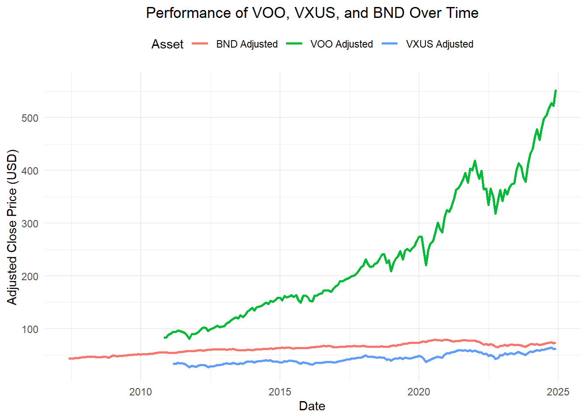
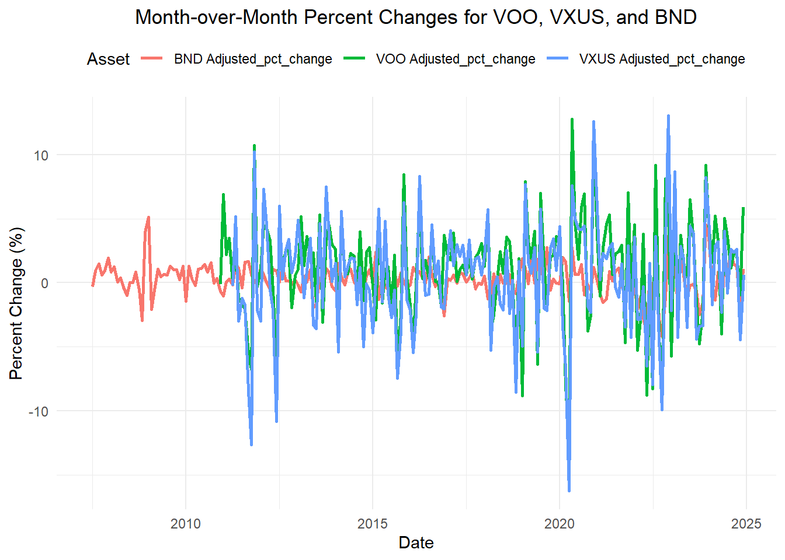
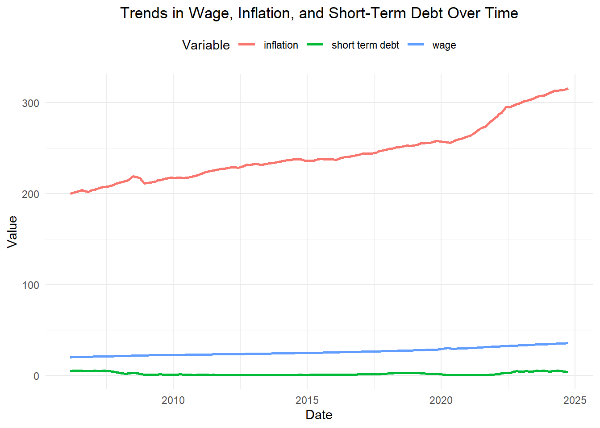
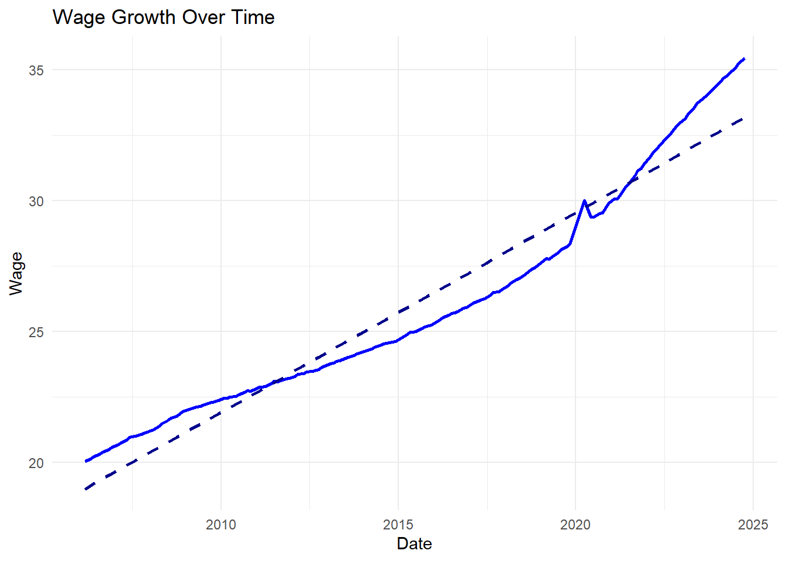
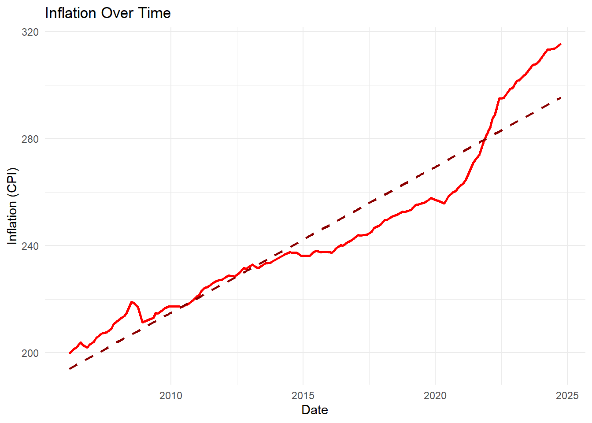
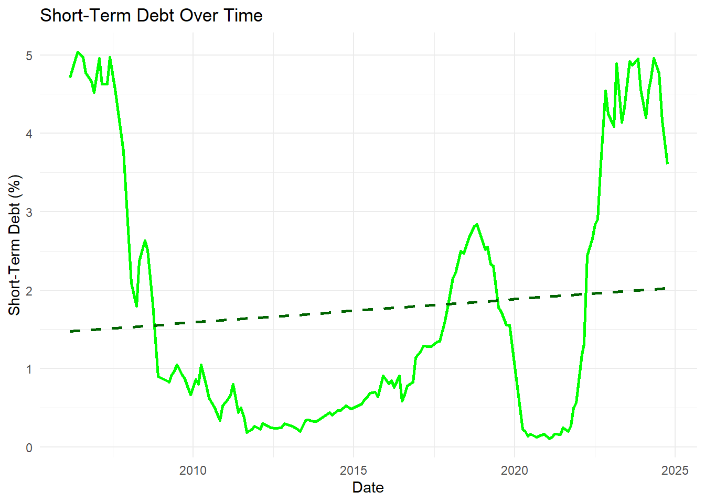

The objective of this analysis is to compare two possible retirement plans and identify which is most beneficial. While there are many factors that may affect an employees decision on which retirement plan to choose, we will try to to standardize parameters for consistency. This will allow us to be able to compare “apples to apples”.
The plans can be found in greater detail but I will provide a summarized description. There are two plans TRS or ORP: -
TRS (Teachers Retirement System) guarantees a certain amount upon retirement and the risk/reward of under/over performing falls on the employer. This means employer will invest your money and if they over perform, they keep the extra. And if they under perform they will front the difference. However, you get the same amount no matter market performance.
ORP (Optional Retirement Plan) provides no guarantees. The risk/rewards falls on the employee and employee decides how much money to invest/contribute. This will allow the employee to make more money than the TRS in a given year, however, it comes with the risk of making less if the markets under performs.
This project will attempt to identify different retirement plan benefits. The analysis will take historical factors into consideration like wage growth, inflation, and short term debt. Additionally, the analysis will look at historical growth (or decline) of the US markets and International markets. The objective is to offer a data-driven recommendation on the optimal retirement plan choice for a typical CUNY employee.
2. Data Sources
For this analysis, we had to utilize API’s from Alphavantage and FRED. Both APIs were free for our use case.
Loading APIs :
Loading API
# Load the required librarieslibrary(httr)library(dplyr)library(tidyr)# Define the AlphaVantage URLALPHAVANTAGE_URL <-"https://www.alphavantage.co/query"# Read the API key from the specified fileapi_key <-readLines("C:/Users/velas/OneDrive/Documents/STA9750-2024-FALL/alphavantage.txt")#fred# Define the FRED API URLFRED_URL <-"https://api.stlouisfed.org/fred/series/observations"# Read the API key from the filefred_api_key <-readLines("C:/Users/velas/OneDrive/Documents/STA9750-2024-FALL/fred.txt")
We used the Alphavantage API to obtain monthly closing prices of ETFs that were associated to the market we aimed to track.
Alphavantage: Time Series of Stock Tickers
US Equity Market: $VOO
International Equity Market: $VXUS
Bond Market: $BND
We used the FRED API to obtain data pertaining to indexes for the following:
FRED: Tracked Indexes
Wage Growth
Inflation
Short Term Debt
Code for API utilization -
US Equity Market: $VOO :
US Equity Market: $VOO
# Request the data for Adjusted Monthly Time Series - Goodvoo_req <-request(ALPHAVANTAGE_URL) |>req_url_query(`function`="TIME_SERIES_MONTHLY_ADJUSTED", # Specify the function for adjusted monthly datasymbol ="VOO", # Stock symbol (e.g., VOO)apikey = api_key # Your API key )# Perform the request and fetch the responseresp_voo <-req_perform(voo_req)# Parse the JSON responseif (resp_status(resp_voo) ==200) { data_voo <-resp_body_json(resp_voo)# Extract the adjusted monthly time series data time_series_voo <- data_voo[["Monthly Adjusted Time Series"]]# Check if the time series data existsif (!is.null(time_series_voo)) {# Convert the nested list to a tidy data frame voo_data <-bind_rows(lapply(time_series_voo, as.data.frame), .id ="Date")# Rename columns to simplify and clean the datacolnames(voo_data) <-c("Date", "Open", "High", "Low", "Close", "Adjusted Close", "Volume", "Dividend Amount")# Convert data types for each column voo_data <- voo_data |>mutate(Date =as.Date(Date), # Convert 'Date' column to Date typeOpen =as.numeric(Open), # Convert numeric columnsHigh =as.numeric(High),Low =as.numeric(Low),Close =as.numeric(Close),`Adjusted Close`=as.numeric(`Adjusted Close`),Volume =as.numeric(Volume),`Dividend Amount`=as.numeric(`Dividend Amount`) ) |>select(Date, `Adjusted Close`) |>rename(`VOO Adjusted`=`Adjusted Close`) |>arrange(Date) } else {stop("No 'Monthly Adjusted Time Series' data found in the response.") }} else {stop("AlphaVantage request for VOO Adjusted Monthly data failed.")}
International Equity Market: $VXUS
International Equity Market: $VXUS
##VXUS# Request the data for Adjusted Monthly Time Series - VXUS - goodvxus_req <-request(ALPHAVANTAGE_URL) |>req_url_query(`function`="TIME_SERIES_MONTHLY_ADJUSTED", # Specify the function for adjusted monthly datasymbol ="VXUS", # Stock symbol for VXUSapikey = api_key # Your API key )# Perform the request and fetch the responseresp_vxus <-req_perform(vxus_req)# Parse the JSON responseif (resp_status(resp_vxus) ==200) { data_vxus <-resp_body_json(resp_vxus)# Extract the adjusted monthly time series data time_series_vxus <- data_vxus[["Monthly Adjusted Time Series"]]# Check if the time series data existsif (!is.null(time_series_vxus)) {# Convert the nested list to a tidy data frame vxus_data <-bind_rows(lapply(time_series_vxus, as.data.frame), .id ="Date")# Rename columns to simplify and clean the datacolnames(vxus_data) <-c("Date", "Open", "High", "Low", "Close", "Adjusted Close", "Volume", "Dividend Amount")# Convert data types for each column vxus_data <- vxus_data |>mutate(Date =as.Date(Date), # Convert 'Date' column to Date typeOpen =as.numeric(Open), # Convert numeric columnsHigh =as.numeric(High),Low =as.numeric(Low),Close =as.numeric(Close),`Adjusted Close`=as.numeric(`Adjusted Close`),Volume =as.numeric(Volume),`Dividend Amount`=as.numeric(`Dividend Amount`) ) |>select(Date, `Adjusted Close`) |>rename(`VXUS Adjusted`=`Adjusted Close`) |>arrange(Date) } else {stop("No 'Monthly Adjusted Time Series' data found in the response.") }} else {stop("AlphaVantage request for VXUS Adjusted Monthly data failed.")}
Bond Market: $BND
Bond Market: $BND
##BND# Request the data for Adjusted Monthly Time Series - BNDbnd_req <-request(ALPHAVANTAGE_URL) |>req_url_query(`function`="TIME_SERIES_MONTHLY_ADJUSTED", # Specify the function for adjusted monthly datasymbol ="BND", # Stock symbol for BNDapikey = api_key # Your API key )# Perform the request and fetch the responseresp_bnd <-req_perform(bnd_req)# Parse the JSON responseif (resp_status(resp_bnd) ==200) { data_bnd <-resp_body_json(resp_bnd)# Extract the adjusted monthly time series data time_series_bnd <- data_bnd[["Monthly Adjusted Time Series"]]# Check if the time series data existsif (!is.null(time_series_bnd)) {# Convert the nested list to a tidy data frame bnd_data <-bind_rows(lapply(time_series_bnd, as.data.frame), .id ="Date")# Rename columns to simplify and clean the datacolnames(bnd_data) <-c("Date", "Open", "High", "Low", "Close", "Adjusted Close", "Volume", "Dividend Amount")# Convert data types for each column bnd_data <- bnd_data |>mutate(Date =as.Date(Date), # Convert 'Date' column to Date typeOpen =as.numeric(Open), # Convert numeric columnsHigh =as.numeric(High),Low =as.numeric(Low),Close =as.numeric(Close),`Adjusted Close`=as.numeric(`Adjusted Close`),Volume =as.numeric(Volume),`Dividend Amount`=as.numeric(`Dividend Amount`) ) |>select(Date, `Adjusted Close`) |>rename(`BND Adjusted`=`Adjusted Close`) |>arrange(Date)# Print the first few rows of the adjusted dataprint(head(bnd_data)) } else {stop("No 'Monthly Adjusted Time Series' data found in the response.") }} else {stop("AlphaVantage request for BND Adjusted Monthly data failed.")}
library(jsonlite)# Define the FRED API URLfred_url <-"https://api.stlouisfed.org/fred/series/observations"# Specify the series ID for wage growth (e.g., CES0500000003)series_id <-"CES0500000003"# Replace with the desired series ID# Define the parameters for the API requestparams <-list(series_id = series_id,api_key = fred_api_key, # Use the fred_api_key variablefile_type ="json")# Perform the API requestresponse <-GET(fred_url, query = params)# Parse the JSON response data <-fromJSON(content(response, "text"))# Extract the observations observations <- data$observations# Convert to a data frame wage_data <-as.data.frame(observations) %>%mutate(date =as.Date(date), # Convert 'date' column to Date typevalue =as.numeric(value) # Convert 'value' column to numeric, value = Average Hourly Earnings of Private Sector Employees ) |>select(date, value)# Print the first few rowsprint(head(wage_data))
date value
1 2006-03-01 20.05
2 2006-04-01 20.15
3 2006-05-01 20.13
4 2006-06-01 20.23
5 2006-07-01 20.29
6 2006-08-01 20.32
Inflation:
Inflation
##fred-inflation# Define the FRED API URLfred_url <-"https://api.stlouisfed.org/fred/series/observations"# Specify the series ID for inflation (e.g., CPIAUCSL for CPI-U)series_id <-"CPIAUCSL"# series ID for inflation - Consumer Price Index Total includes food & energy# Define the parameters for the API requestparams <-list(series_id = series_id,api_key = fred_api_key, # Use the fred_api_key variablefile_type ="json")# Perform the API requestresponse <-GET(fred_url, query = params)# Parse the JSON response data <-fromJSON(content(response, "text"))# Extract the observations observations <- data$observations# Convert to a data frame inflation_data <-as.data.frame(observations) %>%mutate(date =as.Date(date), # Convert 'date' column to Date typevalue =as.numeric(value) # Convert 'value' column to numeric, value = Represents the CPI index value, where the base period (1982-1984) is set to 100. ) #You can calculate inflation rates by computing percentage changes in the index values over time.
Short Term Debt:
Short Term Debt
##Short term debt# Define the FRED API URLfred_url <-"https://api.stlouisfed.org/fred/series/observations"# Specify the series ID for 2-Year Treasury Yield (DGS2)series_id <-"DGS2"# Series ID for 2-Year Treasury Constant Maturity Rate# Define the parameters for the API requestparams <-list(series_id = series_id,api_key = fred_api_key, # Use the fred_api_key variablefile_type ="json")# Perform the API requestresponse <-GET(fred_url, query = params)# Parse the JSON response data <-fromJSON(content(response, "text"))# Extract the observations observations <- data$observations# Convert to a data frame treasury_yield_data <-as.data.frame(observations) %>%mutate(date =as.Date(date), # Convert 'date' column to Date typevalue =as.numeric(value) # Convert 'value' column to numeric )
3. Data Cleaning and Pre-processing
In this analysis we obtained data from sources where the data is regularly maintained. That mean that not much data cleaning was needed.
We did need to change Short Term Debt from daily monthly figure
Short Term Debt:
Short Term Debt monthly
# Load necessary librarieslibrary(dplyr)library(lubridate)# Filter the data to include only the first observation of each monthmonthly_treasury_yield <- treasury_yield_data %>%mutate(month =floor_date(date, unit ="month")) %>%# Add a month columngroup_by(month) %>%# Group by monthslice_min(date) %>%# Select the earliest date in each groupungroup() %>%# Remove groupingselect(date, value)
In order to join our data we were able to find a common columns within all table and that was the date column or month-year column .
FRED Combined Data:
FRED Combined Data
#change column nameswage_data <- wage_data |>rename('wage'= value)inflation_data <- inflation_data |>rename('inflation'= value)monthly_treasury_yield <- monthly_treasury_yield |>rename('short term debt'= value)##FRED# Combine datasets using full_join on the common date columnfred_combined_data <- wage_data %>%full_join(inflation_data, by ="date") %>%full_join(monthly_treasury_yield, by ="date")# Drop rows with missing valuesfred_cleaned_data <-na.omit(fred_combined_data)# Print the first few rows of the cleaned datasetprint(head(fred_cleaned_data))
##Alpha# Combine the datasetsalpha_combined_data <- voo_data %>%full_join(vxus_data, by ="Date") %>%# Join vxus_data with voo_datafull_join(bnd_data, by ="Date") # Join bnd_data with the result# Print the first few rows of the combined datasetprint(head(alpha_combined_data))
Date VOO Adjusted VXUS Adjusted BND Adjusted
1 2010-10-29 83.3870 NA 55.3576
2 2010-11-30 83.2946 NA 54.9805
3 2010-12-31 89.0591 NA 54.4188
4 2011-01-31 91.0393 NA 54.4663
5 2011-02-28 94.1951 34.0534 54.6265
6 2011-03-31 94.1961 33.9667 54.5458
Final Combined Data:
Final Combined Data
##both combined# Adjust Alpha_combined_data to have the first of the monthalpha_combined_data <- alpha_combined_data %>%mutate(date =floor_date(Date, unit ="month")) # Convert last-of-month to first-of-month# Merge the datasets on the adjusted datefinal_combined_data <- alpha_combined_data %>%full_join(fred_cleaned_data, by ="date") %>%# Join by the aligned 'date' columnselect(-date)# Print the first few rows of the merged datasetprint(head(final_combined_data))
Date VOO Adjusted VXUS Adjusted BND Adjusted wage realtime_start
1 2010-10-29 83.3870 NA 55.3576 22.74 2024-11-13
2 2010-11-30 83.2946 NA 54.9805 22.73 2024-11-13
3 2010-12-31 89.0591 NA 54.4188 22.76 2024-11-13
4 2011-01-31 91.0393 NA 54.4663 NA <NA>
5 2011-02-28 94.1951 34.0534 54.6265 22.87 2024-11-13
6 2011-03-31 94.1961 33.9667 54.5458 22.87 2024-11-13
realtime_end inflation short term debt
1 2024-11-13 219.035 0.42
2 2024-11-13 219.590 0.34
3 2024-11-13 220.472 0.53
4 <NA> NA NA
5 2024-11-13 221.898 0.61
6 2024-11-13 223.046 0.66
4. Data Exploration
The first step in exploration will be visualizing the data. We will start by plotting all the market tracker ETFs (VOO, VXUS, BND). Ideally, we would like to see all three of these stocks in one graph so we can comprehend which one has had the most amount of growth given a time frame.
Below are the Performance results of each stock or Market Tracker ETF. The results will have you singing the national anthem, as it is clear that US Equity market has outperformed international market
Stock Graph performance
library(ggplot2)library(tidyr)library(dplyr)# Reshape the data to long formatlong_data <- alpha_combined_data %>%pivot_longer(cols =c(`VOO Adjusted`, `VXUS Adjusted`, `BND Adjusted`),names_to ="Asset",values_to ="Adjusted Close" )# Create the graphggplot(long_data, aes(x = Date, y =`Adjusted Close`, color = Asset)) +geom_line(size =1) +# Line plot for each assetlabs(title ="Performance of VOO, VXUS, and BND Over Time",x ="Date",y ="Adjusted Close Price (USD)",color ="Asset" ) +theme_minimal() +theme(plot.title =element_text(hjust =0.5), # Center the titlelegend.position ="top"# Move the legend to the top )

In order to evaluate the volatility of each equity, we will look into the percent change month over month. Below, we see that international markets have a bit higher volatility than domestic markets while bonds have the least volatility, which is expected.
Stock Graph performance
library(dplyr)# Calculate the month-over-month percentage change for VOO Adjusted, VXUS Adjusted, and BND Adjustedpercent_difference_data <- final_combined_data %>%arrange(Date) %>%# Ensure the data is sorted by datemutate(`VOO Adjusted_pct_change`= (`VOO Adjusted`-lag(`VOO Adjusted`)) /lag(`VOO Adjusted`) *100,`VXUS Adjusted_pct_change`= (`VXUS Adjusted`-lag(`VXUS Adjusted`)) /lag(`VXUS Adjusted`) *100,`BND Adjusted_pct_change`= (`BND Adjusted`-lag(`BND Adjusted`)) /lag(`BND Adjusted`) *100 )# Reshape data to long format for plottingpercent_change_long <- percent_difference_data %>%select(Date, `VOO Adjusted_pct_change`, `VXUS Adjusted_pct_change`, `BND Adjusted_pct_change`) %>%pivot_longer(cols =-Date,names_to ="Asset",values_to ="Percent Change" )# Create the graphggplot(percent_change_long, aes(x = Date, y =`Percent Change`, color = Asset)) +geom_line(size =1) +labs(title ="Month-over-Month Percent Changes for VOO, VXUS, and BND",x ="Date",y ="Percent Change (%)",color ="Asset" ) +theme_minimal() +theme(plot.title =element_text(hjust =0.5), # Center the titlelegend.position ="top"# Position the legend at the top )

When graphing our tracked index data (wage growth, inflation, short term debt), we see that inflation has grown rampant as wages and short term debt have remained stagnant. This implies it has gotten harder to support the same lifestyle now compared to previous years, as products have gotten more expensive but wages haven’t grown to subset the expense.
Tracked Indexes performance
library(ggplot2)library(tidyr)library(dplyr)# Reshape the data to long formatlong_fred_data <- fred_cleaned_data %>%pivot_longer(cols =c(wage, inflation, `short term debt`), # Columns to reshapenames_to ="Variable",values_to ="Value" )# Create the graphggplot(long_fred_data, aes(x = date, y = Value, color = Variable)) +geom_line(size =1) +# Plot lines for each variablelabs(title ="Trends in Wage, Inflation, and Short-Term Debt Over Time",x ="Date",y ="Value",color ="Variable" ) +theme_minimal() +theme(plot.title =element_text(hjust =0.5), # Center the titlelegend.position ="top"# Position the legend at the top )

It is beneficial to look at these Indexes together to evalutate the rate of growth of each Index comparatively. However, there is also value in looking at each index indiviually to evaluate the historical trend.
Here we can see that inflation and wages have grown at a similar “slope”, however, the graph above shows us that it has not grown at the same magnitude. Looking at these data sets combined and individually can provide a much clearer picture.
Task 3 Question 1
library(ggplot2)# Plot for Wageggplot(fred_cleaned_data, aes(x = date, y = wage)) +geom_line(color ="blue", size =1) +# Line plotgeom_smooth(method ="lm", se =FALSE, color ="darkblue", linetype ="dashed") +# Trend linelabs(title ="Wage Growth Over Time",x ="Date",y ="Wage" ) +theme_minimal()

Task 3 Question 1
# Plot for Inflationggplot(fred_cleaned_data, aes(x = date, y = inflation)) +geom_line(color ="red", size =1) +# Line plotgeom_smooth(method ="lm", se =FALSE, color ="darkred", linetype ="dashed") +# Trend linelabs(title ="Inflation Over Time",x ="Date",y ="Inflation (CPI)" ) +theme_minimal()

Task 3 Question 1
# Plot for Short-Term Debtggplot(fred_cleaned_data, aes(x = date, y =`short term debt`)) +geom_line(color ="green", size =1) +# Line plotgeom_smooth(method ="lm", se =FALSE, color ="darkgreen", linetype ="dashed") +# Trend linelabs(title ="Short-Term Debt Over Time",x ="Date",y ="Short-Term Debt (%)" ) +theme_minimal()

Exploring the 2 different plans
The different retirement plan detail can be found here.
The
5. Monte Carlo Analysis
6. Conclusion
In conclusion, the Electoral College system provides a balanced approach to electing the President of the United States by ensuring representation for both populous and less populous states. By giving each state the power to choose how its electoral votes are allocated, the process respects the unique preferences and values of individual states, allowing them to play a significant role in the election outcome. This decentralized approach is what makes the system fundamentally democratic, as it empowers states to represent the voices of their constituents in a way that directly influences the selection of national leadership. The Electoral College, therefore, not only balances the interests of diverse regions but also upholds a fair process that reflects the principles of federalism and democracy.